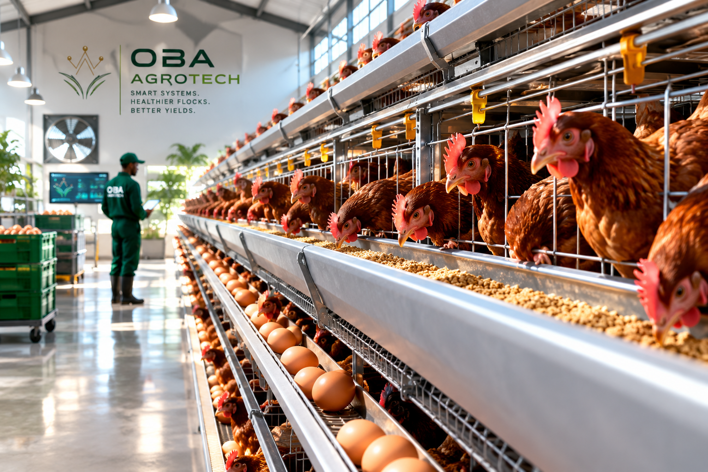
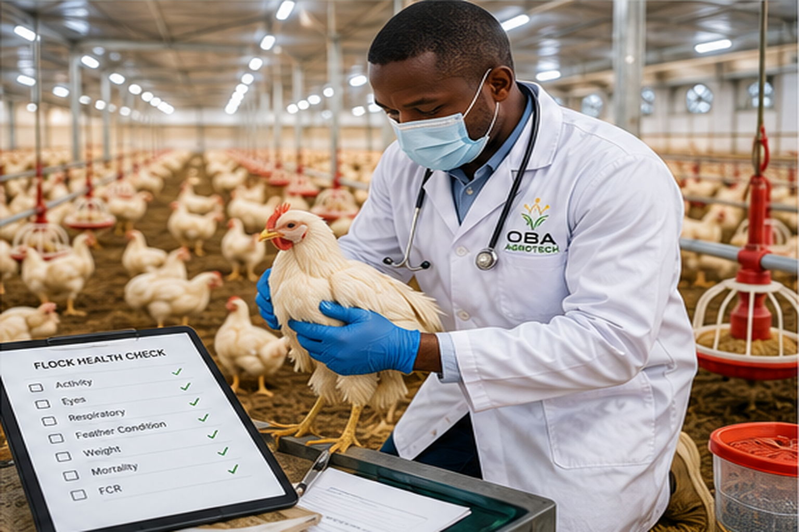
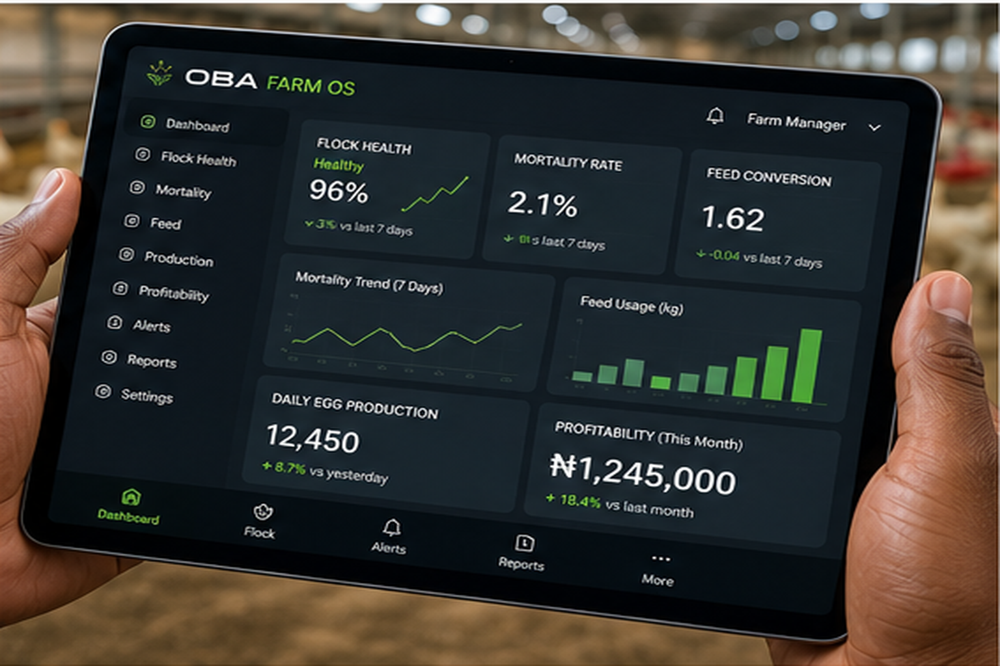
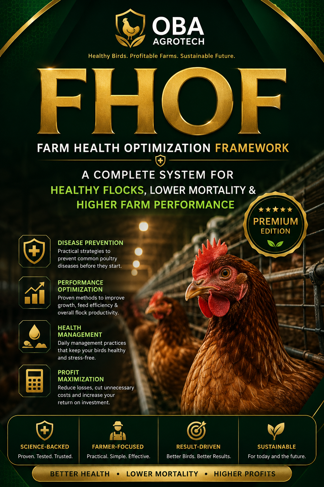

Understand
Turn farm observations into clearer decisions using practical farm intelligence.
We help poultry farmers improve flock health, increase productivity and make better farm-management decisions through practical agricultural expertise, preventive systems and smart digital tools.

OBA AgroTech is an agricultural technology and poultry health brand focused on improving the way Poultry farmers manage flock health, productivity and farm performance.
We combine practical poultry expertise, preventive thinking and smart digital tools to help farmers identify risks earlier, improve routines and make decisions that support healthier flocks and better returns.
Discover the OBA approach ↗
Modern poultry farming is a performance business. Health, prevention, efficiency and timely decisions all influence the productivity and profitability of a flock.
Turn farm observations into clearer decisions using practical farm intelligence.
Reduce avoidable health risks through structured preventive systems.
Improve flock performance, efficiency and consistency over time.
Build stronger systems that support sustainable farm growth and better returns.
Practical tools and systems built around the outcomes that matter.

A structured approach to improving flock health, prevention routines and farm performance.
Explore framework →Practical guidance for farmers facing real farm decisions.
Book a conversation →
Useful calculators, checkers and digital systems designed around everyday farm needs and better decision-making.
Explore digital tools →
A practical framework designed to help small and mid-scale poultry farmers organize how they observe risk, prevent avoidable problems, respond intelligently and continuously optimize farm performance.
HEALTH-FIRST
APPROACH
THINKING AROUND
EARLY RISK
ROOM TO
OPTIMIZE
OBA AgroTech is building a growing ecosystem of smart digital tools for poultry farmers — making useful farm intelligence, calculations and decision support easier to access from a phone.
Structured symptom guidance to help farmers identify when a flock needs closer attention
Calculate production costs, expected revenue, profit and loss for your broiler cycle.
Your everyday digital farm assistant
Whether you're starting, scaling or solving a farm challenge, let's talk about the health, productivity and performance opportunities on your farm.